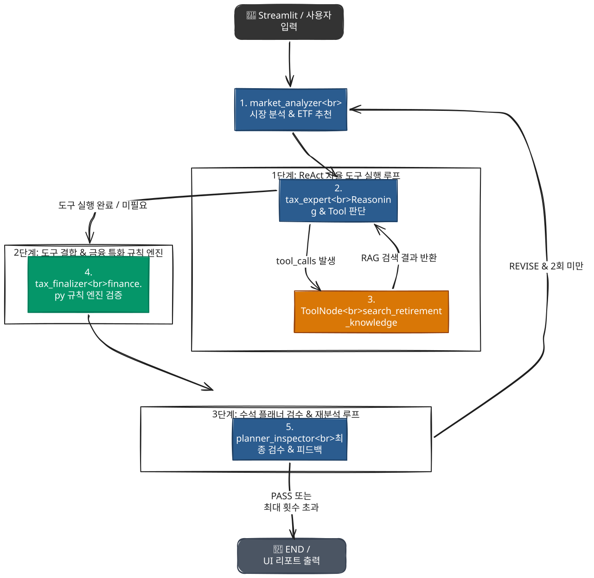

🧩 주요 구성 요소 상세 설명
1. 프론트엔드 영역 (streamlit_app.py)
- 역할: 사용자와 상호작용하는 웹 화면입니다.
- 기능:
- 좌측 사이드바에서 사용자의 목표 월 소득과 투자 성향을 입력받습니다.
- RAG(검색 증강 생성)를 위한 PDF 문서 업로드 및 벡터 DB 업데이트를 수행합니다.
- 분석이 완료되면, Pydantic으로 파싱된 데이터를 바탕으로 Plotly 기반의 파이 차트(자산 배분)와 선 그래프(자산 성장 시나리오)를 그려줍니다.
- 이전 분석 기록(History)을 세션에 저장하여 언제든 다시 볼 수 있게 합니다.
2. AI 에이전트 영역 (src/agents/)
이 프로젝트의 핵심 두뇌 역할을 하는 곳으로, 각기 다른 역할을 맡은 AI 전문가들이 정의되어 있습니다. (experts.py 내부 함수)
- market_analyzer (시장 분석가): 사용자의 투자 성향과 목표에 맞는 ETF 포트폴리오(종목, 비중)와 예상 수익률을 도출합니다.
- tax_expert (세무 전문가): 시장 분석 결과를 받아 절세 전략을 세웁니다. 이때 필요하면
search_retirement_knowledge도구를 사용해 최신 세법 정보(RAG)를 스스로 검색합니다. - tax_finalizer (금융 검증가): LLM이 계산 실수를 하는 것을 막기 위해,
src/utils/finance.py의 실제 파이썬 코드(calculate_retirement_income 등)를 호출하여 세후 수령액을 정확히 계산하고, 위험 자산 비중을 검증해 최종 결과를 확정합니다(가드레일 역할). - planner_inspector (수석 플래너): 앞선 에이전트들의 결과를 종합 검토하여 논리적 모순이 없는지 확인하고 사용자에게 전달할 최종 코멘트를 작성합니다.
3. 프롬프트 및 스키마 영역 (prompts.py, schemas.py)
- prompts.py: 각 에이전트가 완벽한 역할을 수행하도록 Few-shot(예시)과 명확한 제약 조건을 포함한 프롬프트가 들어있습니다.
- schemas.py: LLM이 자유로운 텍스트가 아닌 정확한 JSON 형태(예: MarketAnalysis, TaxStrategy)로 답변하도록 강제하여, 화면에 에러 없이 차트를 그릴 수 있도록 보장합니다.
4. 데이터 및 RAG 영역 (src/utils/retriever.py)
- 역할: AI가 최신 금융 정보나 세법을 기반으로 답변할 수 있도록 돕는 지식 베이스 관리자입니다.
- 기능: data/ 폴더에 있는 PDF 파일들을 읽고(PyPDFLoader), 잘게 쪼갠 뒤(Text Splitter), Azure OpenAI 임베딩을 거쳐 FAISS 벡터 데이터베이스(faiss_index/)에 저장하고 검색할 수 있게 해줍니다.
🔄 전체 실행 흐름 (Workflow) 요약
- 사용자 입력: 웹 브라우저(
streamlit_app.py)에서 성향과 목표 금액 입력 후 분석 시작 버튼 클릭. - 워크플로우 시작:
planner_app.invoke(initial_state)호출로 LangGraph 기반의 AI 파이프라인 시작. - 시장 분석: market_analyzer가 ETF 포트폴리오 구성 (
schemas.MarketAnalysis형태로 반환). - 세무/절세 분석: tax_expert가 RAG를 이용해 세법을 검색하고, tax_finalizer가 실제 수학 공식으로 세후 소득을 검증. (
schemas.TaxStrategy형태로 반환). - 최종 검수: planner_inspector가 결과를 검토하고 인사이트 도출.
- 결과 시각화: 프론트엔드가 결과를 JSON으로 안전하게 파싱한 뒤, 사용자에게 화려한 리포트와 차트로 보여줌.
🔄 실행 흐름도 (Diagram)

※ mermaid & excalidraw 사용